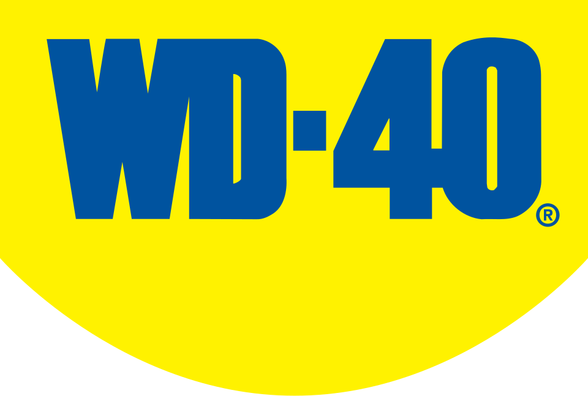

WD-40
WD-40은 침투유와 WD(water-displacing) 스프레이의 상표명이다. 미국 캘리포니아주 샌디에고에 있는 WD-40 컴퍼니가 제조하며, 1953년에 시작된 제품이다.
최종 업데이트

WD-40는 어떤 브랜드인가
WD-40은 침투유와 WD(water-displacing) 스프레이의 상표명이다. 이 스프레이는 미국 캘리포니아주 샌디에고에 있는 WD-40 컴퍼니가 제조한다.
이름은 Water Displacement, 40th formula의 준말이며, 40번의 시도 끝에 나온 결과물임을 암시한다. 다양한 탄화수소로 구성되며, 비휘발성 점성 기름이 표면에 남아 윤활 기능을 제공하고 수분으로부터 보호한다.
1958년 샌디에고의 소비자들에게 판매되었고, 산업 회사들에게는 액체로 대량 판매된다. 배합 성분은 영업 비밀에 부쳐졌으며 특허를 받지 않았다.
WD-40는 어떻게 시작되고 성장했나
1953년 캘리포니아 샌디에고의 로켓 케미컬 컴퍼니에서 시작되었으며, 이 회사는 나중에 WD-40 컴퍼니로 사명을 변경했다. 이 스프레이는 원래 컨베이어 사가 아틀라스 미사일의 외피를 녹과 부식으로부터 보호하기 위해 사용하도록 설계된 것이었다.
이 외피는 미사일 연료 탱크의 외벽 역할을 하였고 매우 취약했다. 이후 수많은 가정에서 쓰일 수 있음이 밝혀져 1958년 샌디에고의 소비자들에게 판매되었다.
배합을 발명한 사람은 자료마다 다르다. 역사가 Iris Engstrand에 따르면 Iver Norman Lawson이 발명했다고 하는 반면, WD-40 컴퍼니 웹사이트와 그 밖의 서적들, 신문들은 Norman B.
Larsen이 그 역할을 했다고 이야기한다.
WD-40의 브랜드 아이덴티티는 무엇인가
배합 성분을 특허 없이 영업 비밀로 유지해 온 침투유·WD 스프레이 상표이며, 아틀라스 미사일 외피의 녹과 부식을 막기 위해 설계된 데서 출발했다.
WD-40의 대표 제품과 서비스는 무엇인가
WD-40은 침투유와 WD 스프레이로 판매되는 제품이다. 캔에 적힌 미국 물질 안전 보건 자료 정보에 따르면 주요 성분은 50%의 지방족 화합물, 25% 미만의 석유 윤활기유, 12–18%의 낮은 증기 압력 지방족탄화수소, 2–3%의 이산화탄소, 10% 미만의 불활성성분이다.
EU 안전 시트의 독일판은 안전 관련 성분으로 60–80%의 수소 처리한 중질 나프타와 1–5%의 이산화탄소를 나열한다. 이 제품은 산업 회사들에게 액체로도 대량 판매된다.
WD-40 로고는 어떻게 변해왔나
자주 묻는 질문
WD-40는 어느 나라 브랜드인가요?
WD-40는 미국의 에너지·산업재 브랜드입니다.
WD-40는 언제 설립되었나요?
WD-40는 1953년 설립되었습니다.
WD-40의 브랜드 아이덴티티는 무엇인가요?
배합 성분을 특허 없이 영업 비밀로 유지해 온 침투유·WD 스프레이 상표이며, 아틀라스 미사일 외피의 녹과 부식을 막기 위해 설계된 데서 출발했다.
WD-40의 대표 제품은 무엇인가요?
WD-40은 침투유와 WD 스프레이로 판매되는 제품이다.
WD-40의 공식 웹사이트는 어디인가요?
WD-40의 공식 웹사이트는 https://www.wd40.com/ 입니다.
출처와 검증
WD-40 관련 참고: 공식 웹사이트 · 위키데이터 Q898762 · 한국어 위키백과 · 영어 위키백과. 브랜드명은 한글과 원어를 함께 표기하되 데이터에 없는 표기는 만들지 않습니다. 기원 국가·설립연도는 검수된 정의문에서 확인된 값을 우선하고, 없을 때만 공식 웹사이트 URL이 일치하는 위키데이터 개체의 값을 씁니다. 위키데이터 값은 2026-11-13 기준입니다.